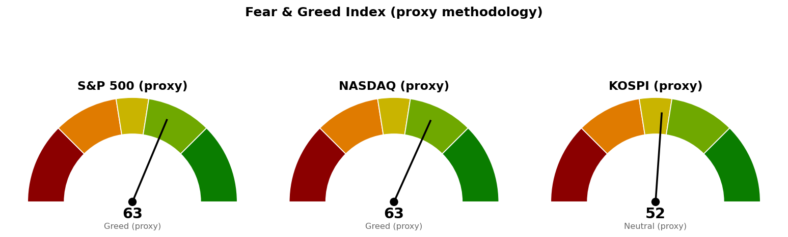

한국시간 2026년 9월 9일 00:32 기준이며, 뉴욕 정규장 개장 후 약 2시간이 지난 장중 수치입니다. 마감까지 값은 바뀝니다.
| 지수 | 현재 | 등락 | 오늘 고가 | 오늘 저가 |
|---|---|---|---|---|
| S&P 500 | 7,694.46 | -0.31% | 7,717.81 | 7,675.69 |
| 나스닥 종합 | 26,485.70 | -0.08% | 26,542.14 | 26,341.17 |
| 코스피 | 7,006.24 | +0.16% | 7,171.52 | 6,951.78 |
| 니케이 225 | 65,370.42 | -1.55% | 66,791.84 | 65,269.33 |
S&P 500은 시가가 곧 오늘 고가(7,717.81)였습니다. 개장 직후가 가장 높았고 이후로는 그 아래에서만 움직였다는 뜻이며, 지수 하락폭이 -0.31%에 그쳤다고 해서 매수세가 붙은 장은 아닙니다. 나스닥은 저가 26,341.17까지 밀렸다가 -0.08%로 거의 되돌려 놓았고, 두 지수의 차이는 아래 섹터 표에서 그대로 설명됩니다.
미 10년 만기 국채 금리는 4.784%로 전일과 동일합니다. 오늘의 섹터 이동은 금리 때문이 아니라 개별 업종 사건 때문이라는 점을 먼저 짚어 둡니다.
미국 섹터 상대강도(SPDR 업종 ETF 기준, 장중):
| 주도 | 등락 | 부진 | 등락 | |
|---|---|---|---|---|
| 에너지 (XLE) | +1.16% | 헬스케어 (XLV) | -2.57% | |
| 유틸리티 (XLU) | +1.09% | 금융 (XLF) | -0.91% | |
| 기술 (XLK) | +0.68% | 필수소비재 (XLP) | -0.84% |
나머지: 부동산 +0.30%, 산업재 -0.01%, 소재 -0.15%, 임의소비재 -0.49%, 커뮤니케이션 -0.57%.
오늘 장의 성격은 한 방향으로 팔거나 사는 장이 아니라, 돈이 업종을 옮겨 다니는 장입니다. 11개 업종 중 4개가 상승, 7개가 하락인데 지수는 -0.31%에 그쳤습니다. 헬스케어 -2.57%는 두 번째로 부진한 금융 -0.91%와도 크게 벌어진 낙폭이고, 그 원인은 아래 핵심 뉴스 ①에 있는 임상 실패 한 건으로 특정됩니다. 즉 지수를 끌어내린 것은 경기나 금리에 대한 판단이 아니라 특정 업종의 사건입니다.
기술 +0.68%가 유지되는 동안 나스닥이 낙폭을 거의 되돌린 것도 같은 맥락이며, 반도체 쪽 개별 호재(뉴스 ②·③)가 그 근거입니다.
① 노바티스의 콜레스테롤 신약 임상 실패, 바이오제약 전반으로 매도 확산 *(MarketWatch)* Lp(a)(혈액 속 지질 성분의 한 종류)를 낮추면 심혈관 질환 위험이 줄어든다는 가설에 여러 제약사가 함께 투자해 왔고, 그 대표 임상이 실패했습니다. 오늘 헬스케어 -2.57%의 직접 원인이며, 한 회사의 문제가 아니라 같은 기전에 투자한 업종 전체의 가정이 흔들린 사건이라는 점이 중요합니다. 지수만 보면 조용한 하루지만, 헬스케어를 보유하고 계시다면 오늘은 조용한 하루가 아닙니다.
② 퀄컴, 아마존과 AI 칩 협력 — 아마존에 40억 달러 규모 주식 워런트(정해진 조건에 퀄컴 주식을 살 수 있는 권리) 부여 *(CNBC·Reuters·MarketWatch)* 퀄컴이 엔비디아가 지배해 온 데이터센터 시장에 진입하려는 시도입니다. 올해 반도체 랠리에서 소외됐던 종목에 붙은 재료라는 점, 그리고 고객사에 주식 인수권을 주는 방식으로 거래가 성사됐다는 점이 함께 읽혀야 합니다. AI 데이터센터 수요를 확보하는 대가로 기존 주주 지분의 희석을 감수한 구조이며, 이런 형태의 계약이 늘어나면 AI 관련 매출의 질을 개별적으로 따져 봐야 합니다.
③ 브렌트유 98달러 돌파 — 사우디 에너지 시설 다수 피격 *(CNBC)* 브렌트유는 98.11달러(+1.90%), 장중 고가 99.45달러입니다. 오늘 에너지 +1.16%의 원인이며, 유틸리티 +1.09%가 함께 오른 것도 금리(10년물 4.784%, 변동 없음)가 아니라 이 쪽 영향으로 보는 편이 자연스럽습니다. 다만 이는 수요가 좋아서가 아니라 공급이 끊길 우려로 오른 가격이므로, 정세가 진정되면 되돌림이 빠릅니다. 위 손절 기준 ②를 96.28달러로 잡은 이유입니다.
| 지수 | 점수 | 판정 |
|---|---|---|
| S&P 500 | 62.6 | 탐욕 |
| 나스닥 | 63.4 | 탐욕 |
| 코스피 | 52.2 | 중립 |

미국 두 지수는 60대 초반의 탐욕 구간입니다. 변동성지수는 15.36으로 전일 대비 +0.39%에 그쳤습니다. 오늘의 업종 이동이 시장 전체의 위험 회피로 번지지는 않았다는 뜻이며, 헬스케어 급락이 지수 전체로 옮겨붙었다면 이 값이 먼저 튀었을 것입니다.
본 자료는 투자자문이 아니며 참고 정보입니다. 모든 수치는 장중 시점의 값으로 마감까지 변동합니다. 투자 판단과 그 결과에 대한 책임은 투자자 본인에게 있습니다.